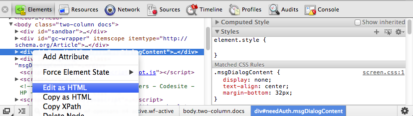
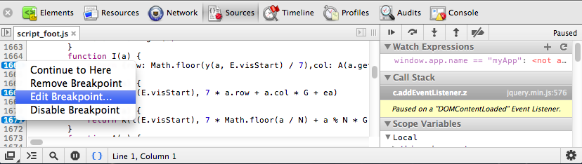
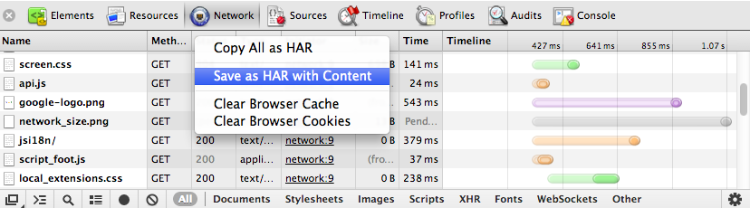
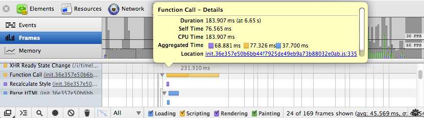
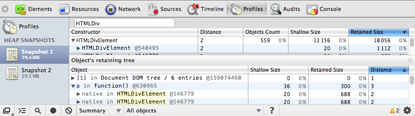
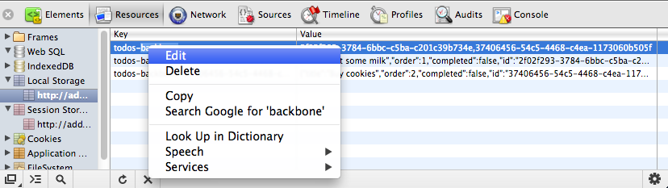

Overview
The Chrome Developer Tools (DevTools for short), are a set web authoring and debugging tools built into Google Chrome. The DevTools provide web developers deep access into the internals of the browser and their web application. This overview of the DevTools points out the most popular and useful features. If you haven't used the DevTools before, start here. Even if you're an experienced web developer, you might pick up some tips.
Note: If you are a web developer and want to get the latest version of DevTools, you should use Google Chrome Canary.
How to access the DevTools
To access the DevTools, open a web page or web app in Google Chrome. Then take one of the following actions:
- Select the Chrome menu at the top-right of your browser window, then select Tools > Developer tools.
- Right-click on any page element and select Inspect element.
There are several useful shortcuts for opening the DevTools:
- Use Ctrl+Shift+I (or Cmd+Opt+I on Mac) to open the DevTools.
- Use Ctrl+Shift+J (or Cmd+Opt+J on Mac) to open the DevTools and bring focus to the Console.
- Use Ctrl+Shift+C (or Cmd+Shift+C on Mac) to open the DevTools in Inspect Element mode, or toggle Inspect Element mode if the DevTools are already open.
For your day-to-day workflow, learning the shortcuts will save you time.
The DevTools window
The DevTools are organised into task-oriented groups in the toolbar at the top of the window. Each toolbar item and corresponding panel let you work with a specific type of page or app information, including DOM elements, resources, and sources.

Overall, there are eight main groups of tools available view Developer Tools: Elements, Resources, Network, Sources, Timeline, Profiles, Storage, Audits, and Console. You can use the Ctrl+[ and Ctrl+] shortcuts to move between panels.
Inspecting the DOM and styles
The Elements panel lets you see everything in one DOM tree, and allows inspection and on-the-fly editing of DOM elements. You will often visit the Elements tabs when you need to identify the HTML snippet for some aspect of the page. For example, you may be curious if an image has an HTML id attribute, and what that attribute's value is.

Read more about inspecting the DOM and styles
Working with the console
The JavaScript Console provides two primary functions for developers testing web pages and applications:
- A place to log diagnostic information using methods provided by the Console API, such as console.log(), or console.profile().
- A shell prompt where you can enter commands and interact with the document and the Chrome DevTools. You can evaluate expressions directly in the Console, and can also use the methods provided by the Command Line API, such as $() command for selecting elements, or profile() to start the CPU profiler.

Read more about working with the console
Debugging JavaScript
As the complexity of JavaScript applications increase, developers need powerful debugging tools to help quickly discover the cause of an issue and fix it efficiently. The Chrome DevTools include a number of useful tools to help make debugging JavaScript less painful.

Read more about how to debug JavaScript with the DevTools
Improving network performance
The Network panel provides insights into resources that are requested and downloaded over the network in real time. Identifying and addressing those requests taking longer than expected is an essential step in optimizing your page.

Read more about how to improve your network performance
Audits
The Audit panel can analyze a page as it loads and provide suggestions and optimizations for decreasing page load time and increase perceived (and real) responsiveness. For further insight, we recommend also installing the PageSpeed extension.
Improving rendering performance
The Timeline panel gives you a complete overview of where time is spent when loading and using your web app or page. All events, from loading resources to parsing JavaScript, calculating styles, and repainting are plotted on a timeline.

Read more about how to improve rendering performance
JavaScript & CSS performance
The Profiles panel lets you profile the execution time and memory usage of a web app or page. The Profiles panel includes a few profilers: a CPU profiler, a JavaScript profiler and a Heap profiler. These help you to understand where resources are being spent, and so help you to optimize your code:
- The CPU profiler shows where execution time is spent in your page's JavaScript functions.
- The Heap profiler shows memory distribution by your page's JavaScript objects and related DOM nodes.
- The JavaScript profile shows where execution time is spent in your scripts

Read more about using how to improve JavaScript and CSS performance
Inspecting storage
The Resources panel lets you inspect resources that are loaded in the inspected page. It lets you interact with HTML 5 Database, Local Storage, Cookies, AppCache, etc.

Read more about inspecting storage resources
Further reading
There are several other areas of the DevTools documentation that you might find of benefit to review. These include:
Further resources
Get moreTo more tips on the DevTools watch our regular show The Breakpoint on YouTube. You can also follow us on @ChromiumDev or ask a question using the forums. or checkout the Google Chrome Developers G+ page. |
Take the courseExplore and master the DevTools with our free "Discover DevTools" coursen on Code School. Get involvedTo submit a bug or a feature request on DevTools, please use issue tracker at http://crbug.com. Please also mention "DevTools" in the bug summary. Anyone can also help make the DevTools better be directly contributing back to the source. Debugging extensionsLooking to use the DevTools to debug Chrome extensions? Watch Developing and Debugging extensions or read the Debugging tutorial. |